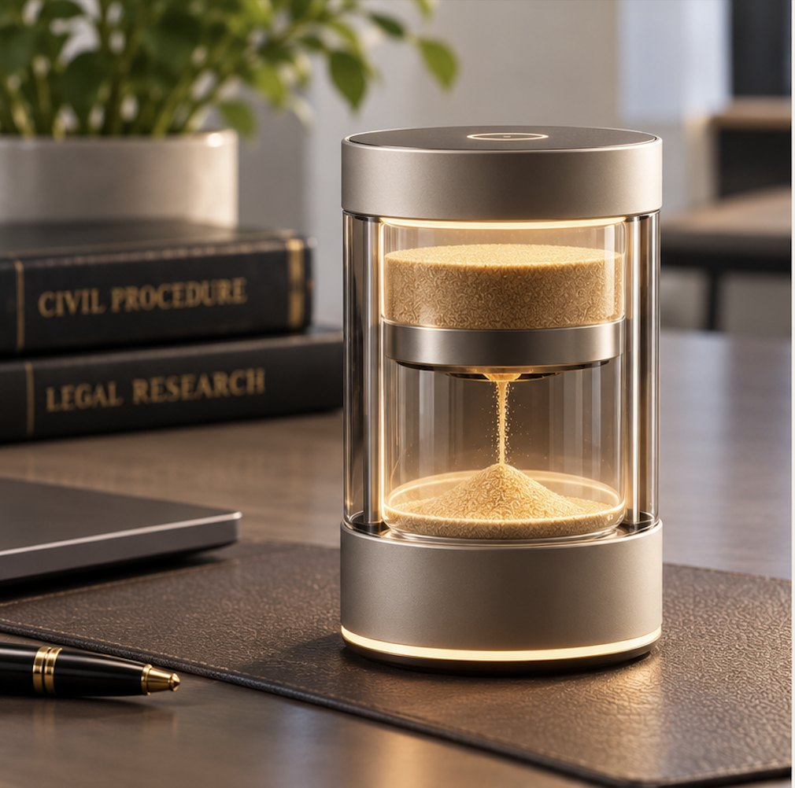

A desk sand timer for focused work
A quiet reminder to look away.
TempoSand is a screen-free timer for your desk. Flip it to begin a work block. When the sand runs out, let your eyes rest.
Pay nothing today
No app. No alerts. Just one visible interval.

Time, made tangible
A physical pause for a digital day. TempoSand gives your attention a beginning, an ending, and a reason to step back.
How it works
Let the sand set the pace.
- 01
Flip it
Turn TempoSand over when you sit down to work. The sand starts the interval.
- 02
Stay with it
Keep the timer in view and leave your phone out of the loop.
- 03
Look away
When the last grains fall, rest your eyes and take a short reset.
The object
A timer you will want to keep in sight.
Quietly finished in brushed metal and clear glass, TempoSand belongs beside the things you use every day. It marks time without adding another notification to it.
- Interval
- About 50 minutes per flip
- Construction
- Brushed metal body and clear glass
- Sound
- Silent from start to finish
- Pause
- Lay it on its side
- Price
- $34, pay when it ships
Why a sand timer
Nothing to charge.
Nothing to answer.
TempoSand does one thing well: it makes a stretch of time visible. No screen, chime, or account stands between you and the break you meant to take.
Lay it down during a call or meeting. Stand it up when you are ready to return. The rhythm stays yours.
Questions
The short version.
Does it need an app or my phone?
No. There is nothing to pair, connect, charge, or install.
How long is one interval?
The glass runs for about 50 minutes per flip.
Is it noisy or distracting?
It makes no sound. The sand is the only signal.
What happens during a call?
Lay it on its side and the sand stops. Stand it back up and it picks up where it left off.
Start with one interval